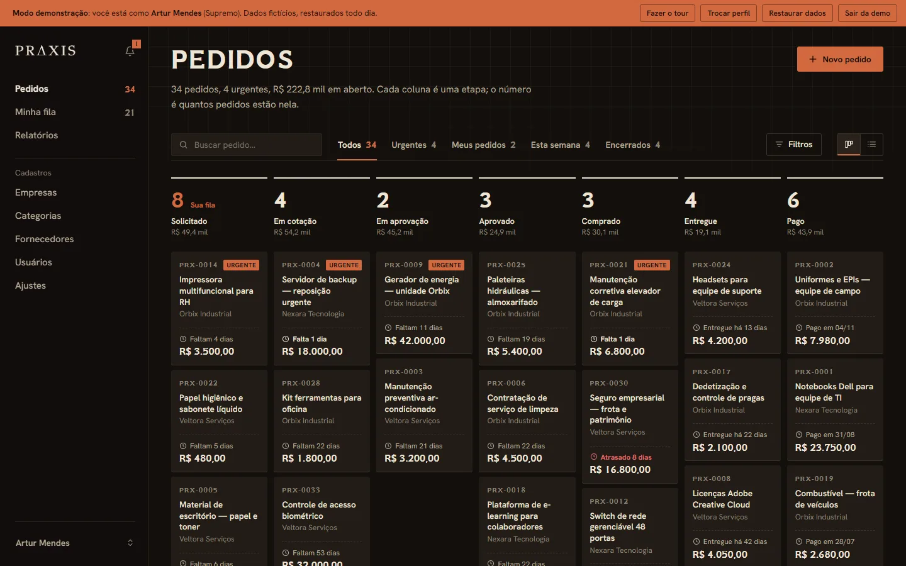
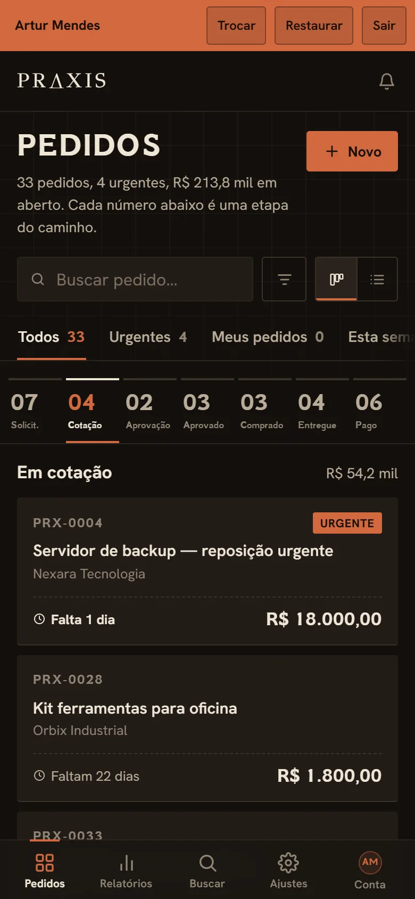
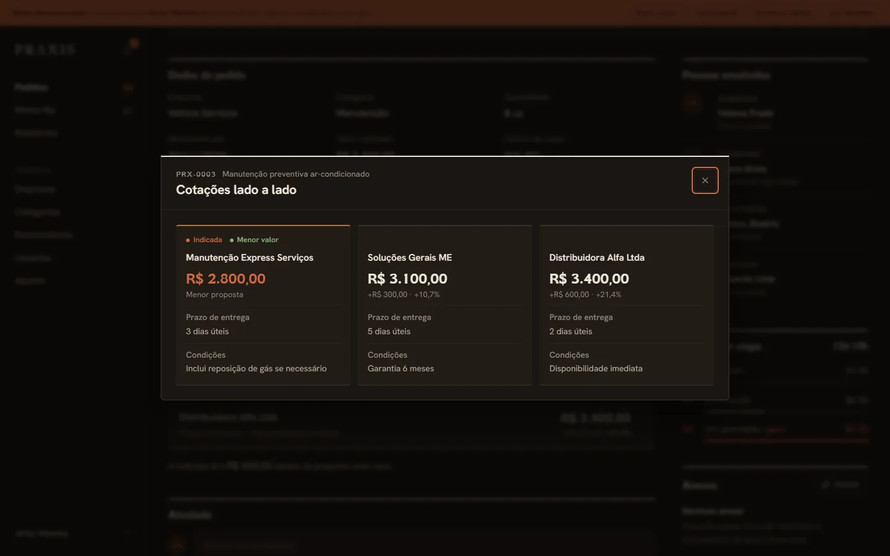
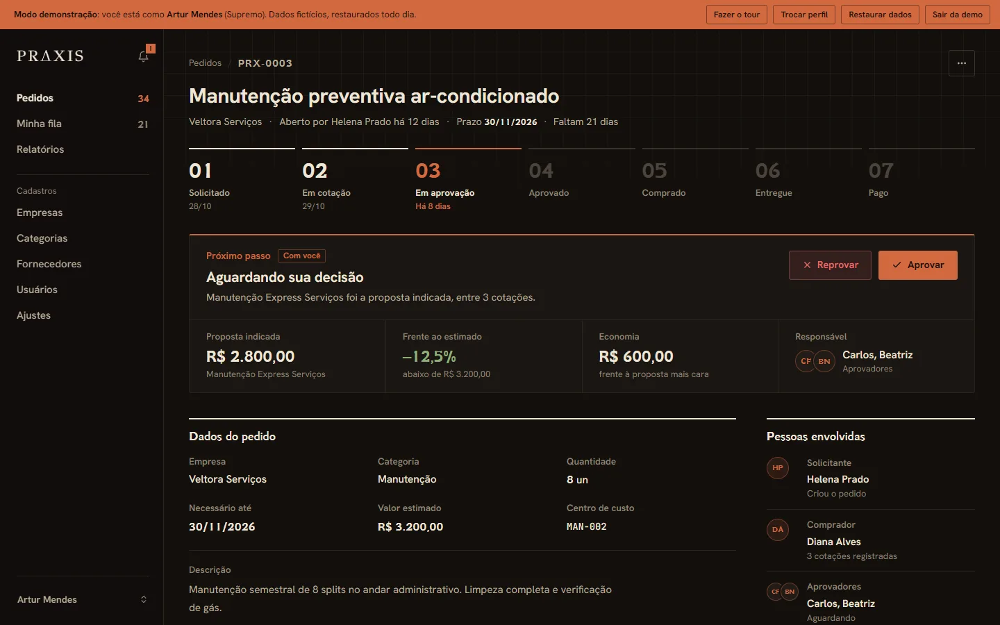

Praxis
Del pedido al pago, en un solo flujo.


En esta página: 01Por qué existe
Por qué existe
El objetivo era organizar las compras del grupo. Cuanto más crecía el grupo, más difícil era rastrear y controlar cada pedido. Creé Praxis inspirado en las mejores herramientas de gestión y seguimiento de compras del mercado.
Problema, sistema y comprobación
Problema
Pedidos, cotizaciones y aprobaciones difíciles de rastrear.
Sistema
Compras corporativas en 7 etapas: cotizaciones lado a lado, aprobaciones, cuotas, plazo y tiempo por etapa, con 6 perfiles de acceso.
Comprobación
45 pruebas
15 de unidad y 30 de las reglas de Firestore y Storage, en GitHub Actions. Verificadas el 9/11/2026.
Por dentro
-
Una columna por etapa
Cada columna indica cuántos pedidos tiene y el total en reales. Cada tarjeta muestra la empresa, el valor y los días que faltan para el plazo.
-

Cotizaciones lado a lado
Propuestas en la misma pantalla, con valor, diferencia respecto a la más baja, plazo de entrega y condiciones. La recomendada queda marcada.
-

6 perfiles de acceso
El pedido muestra quién debe actuar ahora y el ahorro frente a la propuesta más cara. Solicitante, comprador, aprobadores y finanzas, cada uno con sus permisos.
-
Se instala como app
PWA: el mismo flujo en el teléfono, con las etapas en pestañas y la navegación en la parte inferior.
Cómo se construyó
Arquitectura
Praxis es una SPA en JavaScript puro: index.html carga js/app.js como ES Module, que sigue el inicio de sesión y elige la pantalla por la query ?tela=. No hay servidor propio: los datos están en Firestore, los archivos en Storage y la autorización en las reglas de seguridad, que leen el perfil y las empresas grabados en el token. Las Cloud Functions mantienen ese token y envían los avisos de cada cambio de estado.
Ver en el código: index.html L126 arquitetura.md L1–20 firestore.rules L271–305 triggers.js L9–43
- Acción en pantalla
- Reglas de Firestore
- Pedido e historial
- Disparador en Functions
- Aviso en la campana
Decisiones técnicas
Permisos en las reglas, no en pantalla
Escribí cada paso del pedido como una función de las reglas de Firestore (
assumir,aprovar,pagar…), que comprueba el estado de origen y el de destino, el perfil y, conmudouSo, qué campos puede cambiar ese paso. El perfil y las empresas vienen del token, grabados por la functionsetUserClaimsen cada escritura en/usuarios; así las reglas deciden sin leer otro documento.Ver en el código: firestore.rules L182–263 firestore.rules L59–61 triggers.js L9–38 arquitetura.md L27
Transacción para asumir y decidir
Asumir, liberar, aprobar y rechazar se ejecutan en
runTransaction: la transacción vuelve a leer el pedido y desiste si otra persona ya lo asumió o decidió, así que dos clics al mismo tiempo no se convierten en dos decisiones._historicoJuntograba la entrada del historial en la misma transacción o lote, y las reglas no permiten editar el historial: el pedido no cambia de estado sin registro.Ver en el código: pedido-detalhe.js L1406–1520 pedido-detalhe.js L2614–2622 firestore.rules L361–366
Sin framework y sin paso de build
El navegador carga los ES Modules directamente, y el SDK de Firebase viene del CDN con la versión fija 13.1.0, adelantado con
modulepreload. Sin bundler, lo que está en el repositorio es lo que va a Hosting. Enlocalhost,js/firebase.jsconecta la app a los emuladores por sí solo, y la app se ejecuta entera en el equipo sin tocar datos reales. En el CI, cada módulo pasa pornode --check.Ver en el código: index.html L43–47 firebase.js L1–58 arquitetura.md L25 testes.yml L33–34
Desafío
Una demo pública con la contraseña expuesta
La demo necesita inicio de sesión, y la contraseña de la cuenta demo va en el js/config.js que el sitio entrega a cualquier visitante. Por eso las reglas reconocen esa cuenta por el correo y le dan el perfil demo, que no equivale a ningún otro: solo lee y graba documentos con isDemo == true y pedidos con ID demo-…. Los ID automáticos de Firestore no tienen guion, y la marca isDemo no cambia una vez creada: ningún pedido real entra en esa área.
Ver en el código: firestore.rules L11–36 firestore.rules L265–269 storage.rules L6–16 regras.test.mjs L224–335 README.pt-br.md L90
Pruebas
Son 15 pruebas de unidad con node --test, sobre las funciones puras de js/utils.js y js/constants.js y la regla de acceso a la renovación de la demo en las Functions, y 30 de las reglas de Firestore y Storage, que se ejecutan en el emulador y comprueban, por ejemplo, que quien abrió el pedido no lo aprueba y que el estado y el historial se graban juntos. GitHub Actions ejecuta ambas en cada push a main y en los pull requests, además del lint de las Cloud Functions.
Ver en el código: unidade.test.mjs regras.test.mjs package.json L7–11 testes.yml
Stack y enlaces
Stack
JavaScript (ES modules), Firebase (Firestore, Auth, Storage, Hosting), PWA, Cloud Functions, node:test, GitHub Actions